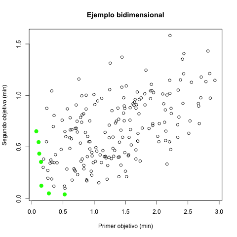
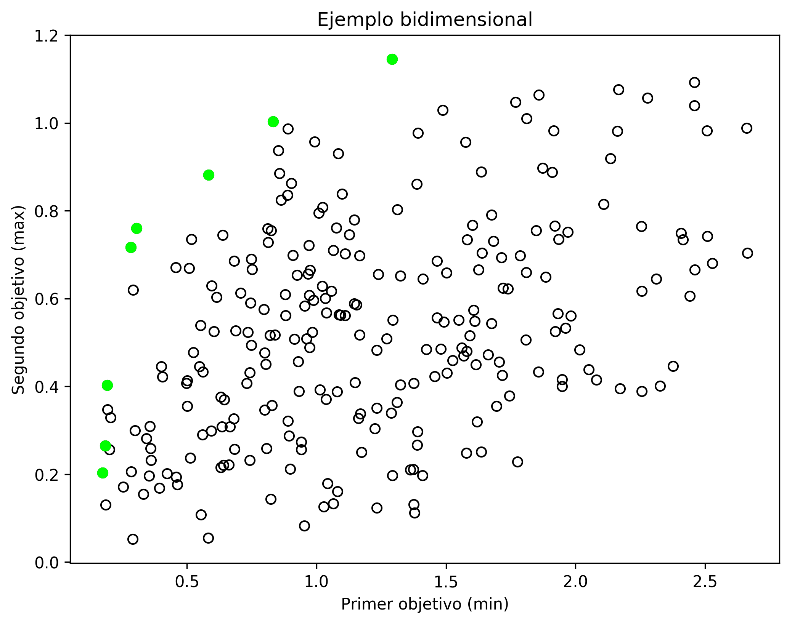

En optimización multicriterio, a un mismo conjunto de variables ocupa asignarse valores de tal forma que se optimizen dos o más funciones objetivo, que pueden contradecir una a otra — una mejora en una puede corresponder en una empeora en otra. Además hay que respetar potenciales restricciones, si es que haya.
Para estudiar este problema, vamos a primero implementar un generador de polinomios aleatorios. Estos polinomios los utilizaremos como funciones objetivo. Vamos a permitir solamente una variable por término y un término por grado por variable.
$ Rscript poligen.R
variable coef degree
1 3 0.8021905 1
2 3 0.1391537 2
3 3 0.5558222 4
4 3 0.6568303 3
5 2 0.6306559 1
[1] 1.904372
$ python3 poligen.py
coef deg var
0 0.970670 3 0
1 0.246830 3 0
2 0.001301 1 1
3 0.495901 3 3
4 0.793710 2 2
2.0729168916571723
Para simplicidad de visualización, vamos a concentrarnos en el caso de dos funciones objetivo, hasta la tarea. Vamos a generar muchas soluciones al azar, también por simplicidad — los retos de la tarea permitirán mejorar este aspecto — y calculamos los valores de los objetivos para cada solución. Por simplicidad, vamos a suponer que no tenemos restricciones.
Para cada objetivo, vamos a determinar si se va a minimizar
(los marcamos con verdad) o
Como los dos mejores rara vez logran a coincidir y a veces son bastante opuestos, se ocupa una definición para qué en sí es una buena solución. Para eso usaremos la dominancia de Pareto: una solución domina a otra si no empeora ninguno de los objetivos y mejora a por lo menos uno. Vamos a calcular la dominancia en paralelo entre todas las soluciones y marcar aquellas que no son dominadas por ninguna otra solución.
 A las soluciones no dominadas se les conoce como un frente de Pareto.
Vamos a además graficar la distribución de las
cantidades de soluciones dominantes sobre el conjunto de
soluciones. Para R, sirve la subrutina geom_violin del
paquete ggplot2
(c.f. un tutorial).
En Python, viene ya en matplotlib
(c.f. la documentación).
Grafica el porcentaje de soluciones de Pareto (ojo, no es lo mismo que se grafica en el código ejemplo) como función del número de funciones objetivo para $k \in [2, 3, 4, 5]$ con diagramas de violín combinados con diagramas de caja-bigote, verificando que diferencias observadas, cuando las haya, sean estadísticamente significativas. Razona en escrito a qué se debe el comportamiento observado.
El primer reto es seleccionar un subconjunto (cuyo tamaño como un porcentaje del frente original se proporciona como un parámetro) del frente de Pareto de tal forma que la selección esté diversificada, es decir, que no estén agrupados juntos en una sola zona del frente las soluciones seleccionadas. Graficar los resultados de la selección, indicando con un color cuáles se incluyen en el subconjunto diverso.
El segundo reto es adaptar el algoritmo genético de la tarea anterior para que vaya buscando mejora a un frente; la población inicial es el frente generado en la tarea y se aplica la diversificación del primer reto a cada generación después de los cruzamientos y las mutaciones. Visualiza con un GIF animado cómo avanza la frente de una generación a otra.
https://satuelisa.github.io/p11.html